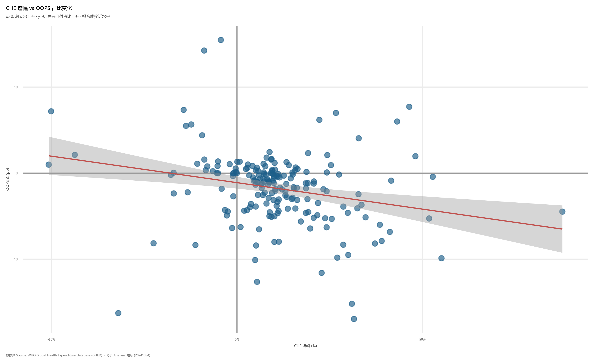
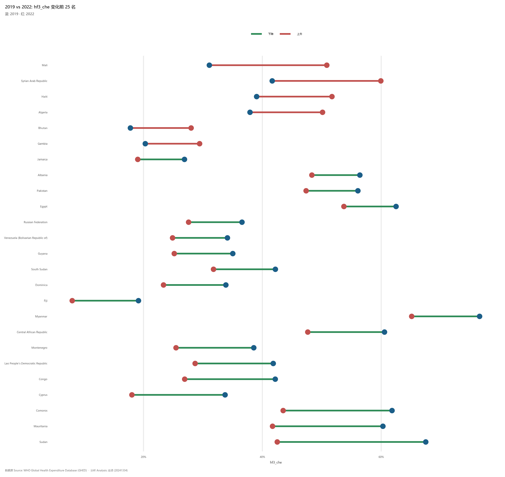
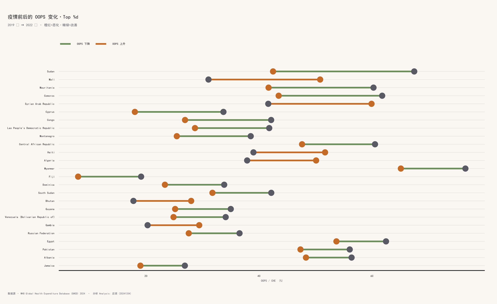
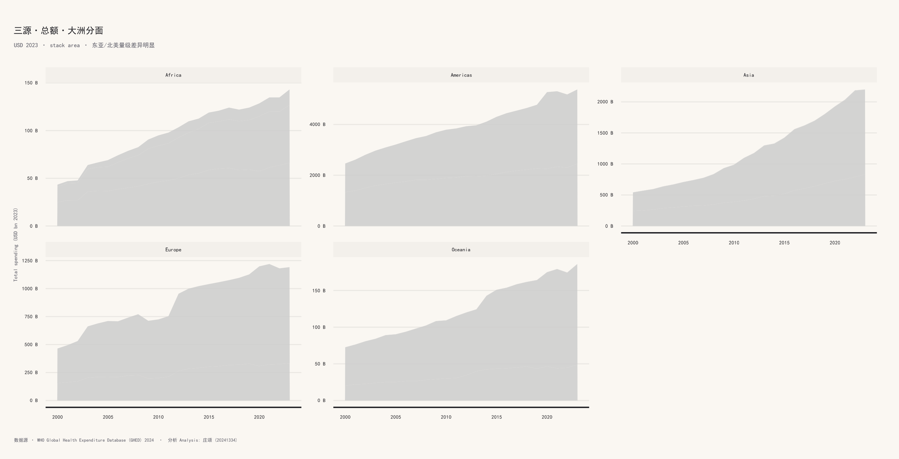

Code
| 指标 | 数值 |
|---|---|
| 总体平均 CHE 变化 (%) | 10.60 |
| 平均 OOPS 变化 (pp) | -1.75 |
| 平均 GGHE-D 变化 (pp) | 1.32 |
| 样本国家数 | 194.00 |
| CHE 上升的国家数 | 156.00 |
2020-2022：政府是最后的保险单
| 指标 | 数值 |
|---|---|
| 总体平均 CHE 变化 (%) | 10.60 |
| 平均 OOPS 变化 (pp) | -1.75 |
| 平均 GGHE-D 变化 (pp) | 1.32 |
| 样本国家数 | 194.00 |
| CHE 上升的国家数 | 156.00 |
d <- shock |>
dplyr::filter(is.finite(.data$oops_delta_pp), abs(.data$che_delta_pct) < 200)
ggplot2::ggplot(d, ggplot2::aes(.data$che_delta_pct, .data$oops_delta_pp)) +
ggplot2::geom_hline(yintercept = 0, colour = "grey60") +
ggplot2::geom_vline(xintercept = 0, colour = "grey60") +
ggplot2::geom_point(alpha = 0.65, size = 2.4, colour = "#1B5E88") +
ggplot2::geom_smooth(method = "lm", se = TRUE, colour = "#C0504D",
linewidth = 0.6) +
ggplot2::scale_x_continuous(labels = scales::label_percent(scale = 1)) +
labs_ghs(
title = "CHE 增幅 vs OOPS 占比变化",
subtitle = "x>0: 总支出上升 \u00b7 y>0: 居民自付占比上升 \u00b7 拟合线接近水平",
x = "CHE 增幅 (%)", y = "OOPS \u0394 (pp)"
) +
theme_ghs()
拟合接近水平意味着：CHE 涨得多的国家，OOPS 占比并没有系统性上升或下降——也就是说多出来的钱主要由政府/外援承担，而非由居民自付填补。
shock |>
dplyr::arrange(dplyr::desc(.data$che_delta_pct)) |>
dplyr::slice_head(n = 10) |>
dplyr::transmute(
国家 = .data$country_name,
`CHE 增幅 (%)` = round(.data$che_delta_pct, 1),
`OOPS 变化 (pp)` = round(.data$oops_delta_pp, 2),
`政府变化 (pp)` = round(.data$gghed_delta_pp, 2)
) |>
knitr::kable(caption = "2020-2022 vs 2019 \u00b7 CHE 增幅 Top 10")| 国家 | CHE 增幅 (%) | OOPS 变化 (pp) | 政府变化 (pp) |
|---|---|---|---|
| Timor-Leste | 87.7 | -4.47 | 5.82 |
| Guyana | 55.1 | -9.89 | 11.30 |
| Niue | 52.7 | -0.42 | -19.15 |
| Mongolia | 51.8 | -5.26 | 2.42 |
| Uzbekistan | 48.1 | 1.97 | -1.88 |
| Liberia | 46.4 | 7.72 | -6.81 |
| Burkina Faso | 43.1 | 6.00 | -3.38 |
| Cook Islands | 41.5 | -0.87 | 0.72 |
| Venezuela (Bolivarian Republic of) | 41.2 | -6.82 | 1.59 |
| Uganda | 39.0 | -7.88 | 6.82 |
plot_covid_dumbbell(master_enriched, top_n = 25)
哑铃图把 2019 → 2022 的变化具像为两端点 + 一条线段：
疫情三年改变了我们对”卫生筹资能不能扛住冲击”的直觉。下一章我们把目光投向未来：走向 UHC 的路上，全球还差几年？
plot_v2_covid_dumbbell(master_enriched, n_top = 25)
plot_v2_continent_stream(master_enriched)
MC 概率扇：基于 ARIMA 残差分布的 1000 次蒙特卡洛重采样，给出非参数 5–95% 概率区间。比单一点预测更诚实地表达不确定性。
che_usd2023、hf3_che、gghed_che、ext_che；定义 冲击 为 2020-2022 三年均值 vs 2019 基准。covid_shock() 函数计算各国 Δ%；plot_covid_dumbbell() 把 OOPS 端点变化可视化。